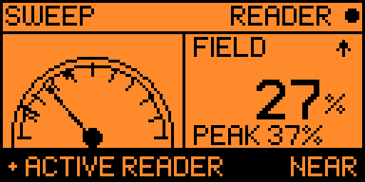

Sweep — where is it?
An analog-style EMF gauge whose needle rides the field in real time, with a peak-hold marker and a mark drawn at the exact point where reader begins at your current sensitivity — so the dial answers “what counts as a hit?” instead of leaving you to guess. Geiger clicks speed up as you close in, and the Flipper buzzes once when the meter pegs, so you can home in without watching the screen.
UPDOWN sensitivity, mid-hunt · LEFT learn the room’s noise floor · hold OK save the finding
